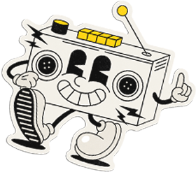
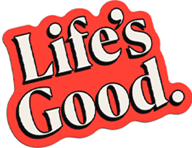

Crea una canción y alegra el día de alguien

Desplázate hacia abajo
Deslizamos, damos clic y damos “likes” todos los días.
Pero ¿realmente estamos conectando? Tal vez lo que necesitamos son conexiones de corazón a corazón.

Por eso traemos nuestro mensaje de “Life’s Good” a través del lenguaje universal de la música.
Crea una canción para esa persona especial con LG Radio Optimism.
Es muy fácil: piensa en esa persona y escribe unas palabras sobre ella. Así cobra vida una canción única, lista para compartir con una sonrisa.

Cuando creas una canción desde el corazón para alguien, o cuando recibes una de alguien especial, es ahí donde surge una conexión real y experimentamos lo que significa Life’s Good.
¿Cómo hacer tu canción?
Solo unos toques — así de fácil.
Canciones hechas solo para ti


La Rebelde Optimista
By Luis


El Cielo se Vuelve más Azul
By Maria


Tu Luz en mi Alma
By Diego


El Sol en la Madrugada
By Daniela


Conoce más sobre Life’s Good